We are not a trading office behind a screen. STWADD takes its own drinkware to international exhibitions — HOMELIFE Indonesia in Jakarta, Dubai in the UAE and Warsaw in Poland — sets up a real booth, and puts our bottles, tumblers and flasks into buyers' hands. And when a retail chain or importer cannot travel, we travel to them: a buyer meeting at a supermarket group's office in Jakarta, Indonesia, and a visit to a buyer's own office and showroom in Dubai, samples in hand both times. A factory you can shake hands with is a factory you can trust with a container.
Click any photo to view it larger. Every image below was taken with our own products and our own team, at our stands in South-East Asia, the Middle East and Europe — the buyers who came to evaluate us in person, and the products they handled on the spot. The first block is our most recent show: HOMELIFE Indonesia (the 8th Indonesia HOMELIFE Expo), held at the Jakarta International Expo (JIExpo) from 27 to 30 November 2024.
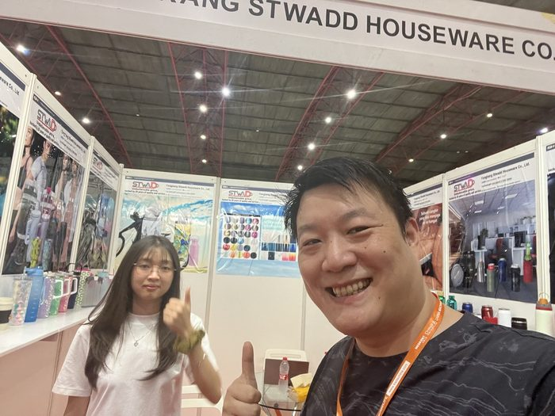
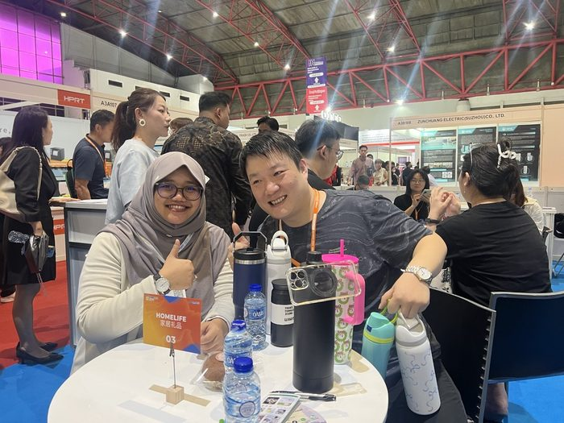
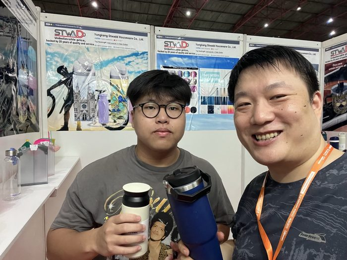
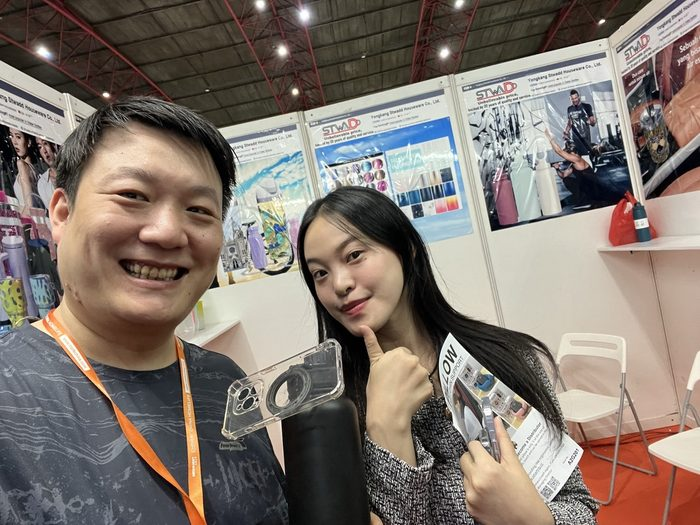
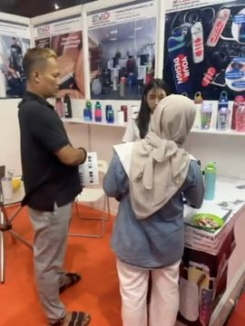
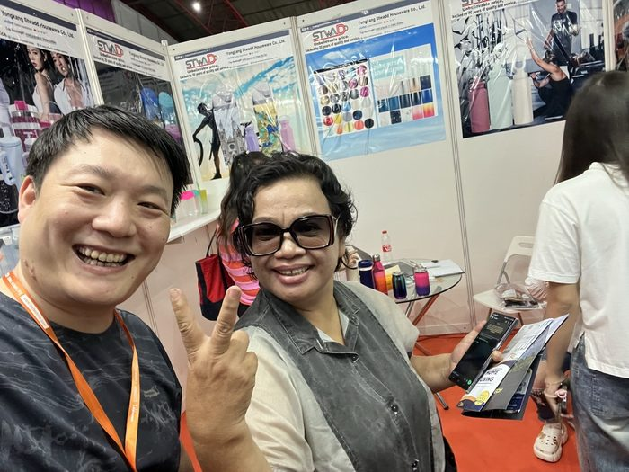
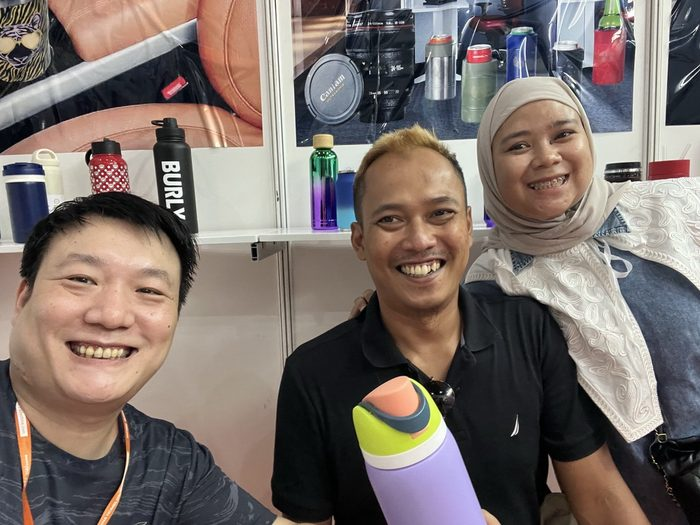
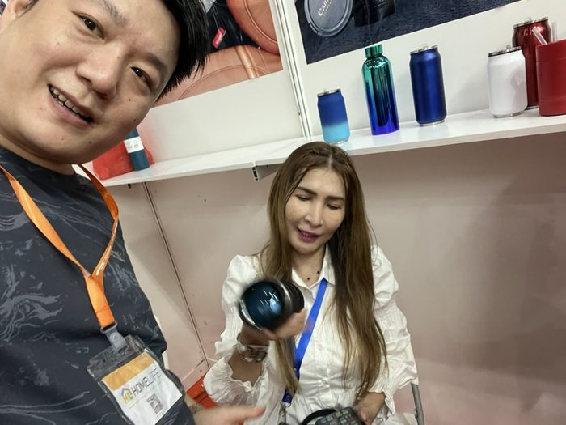
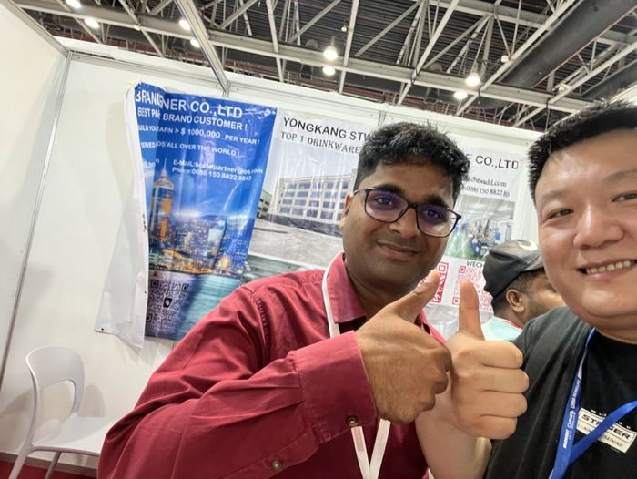
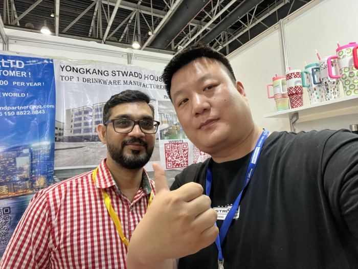
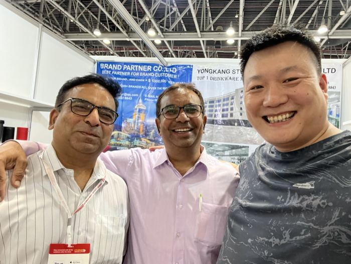
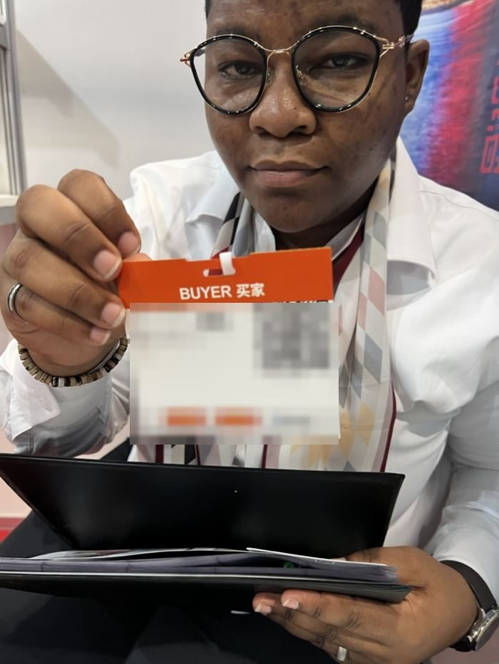
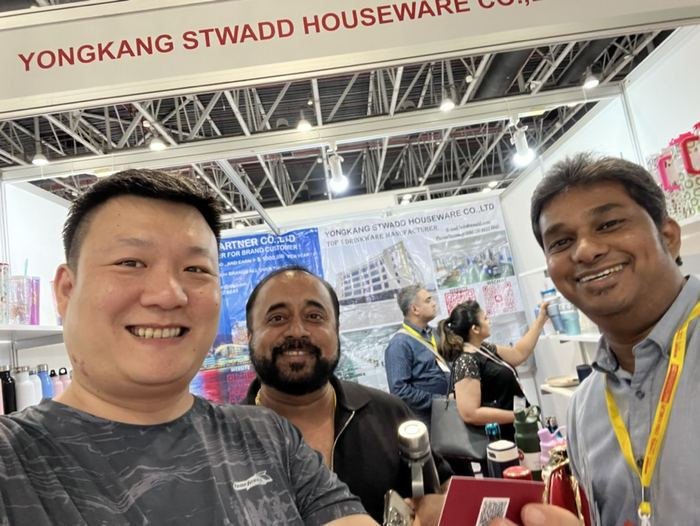
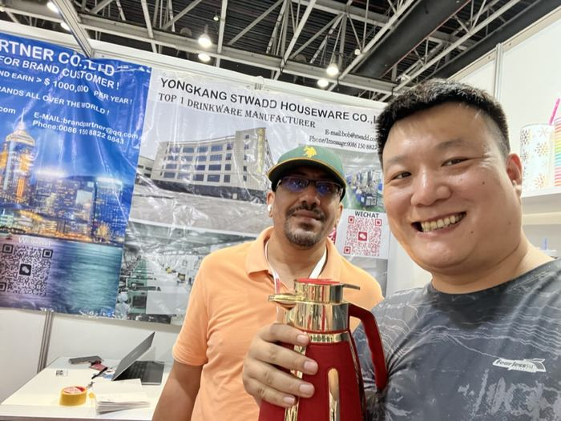
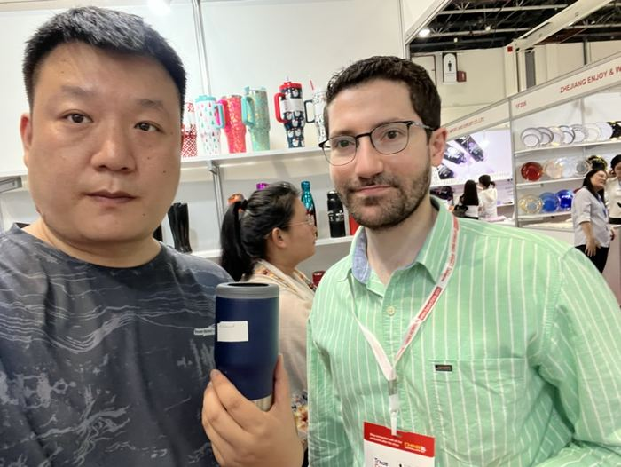
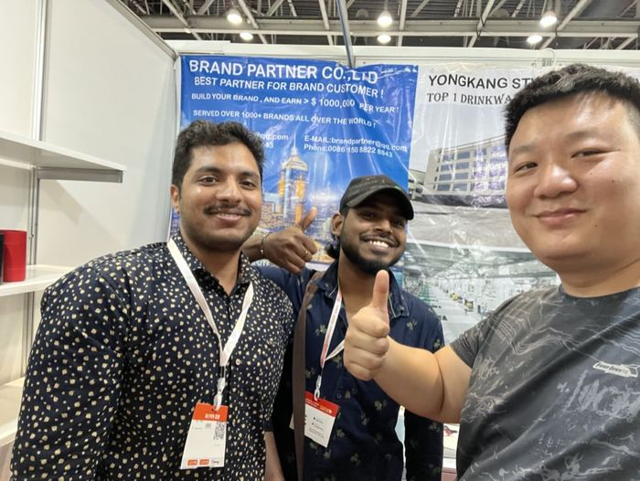
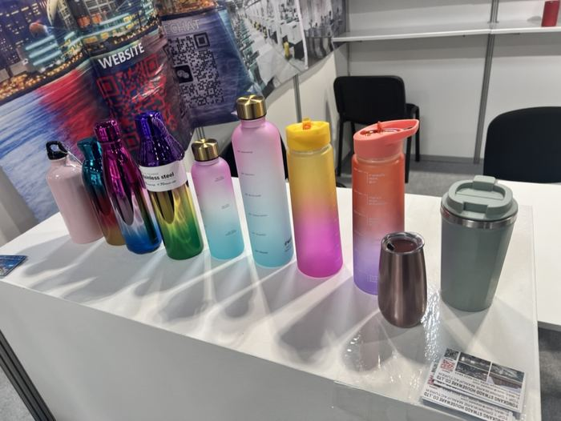
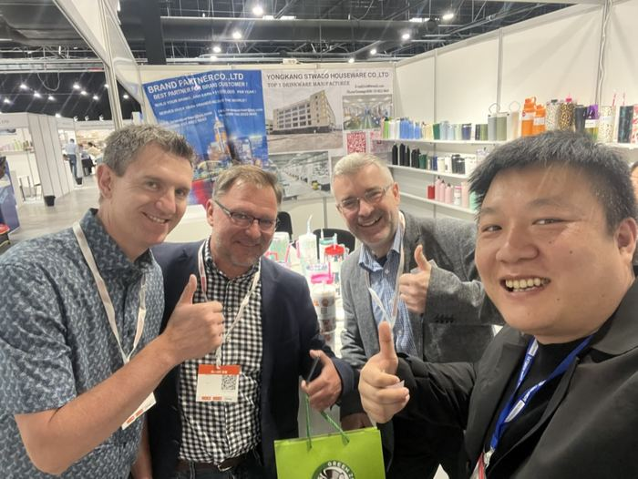
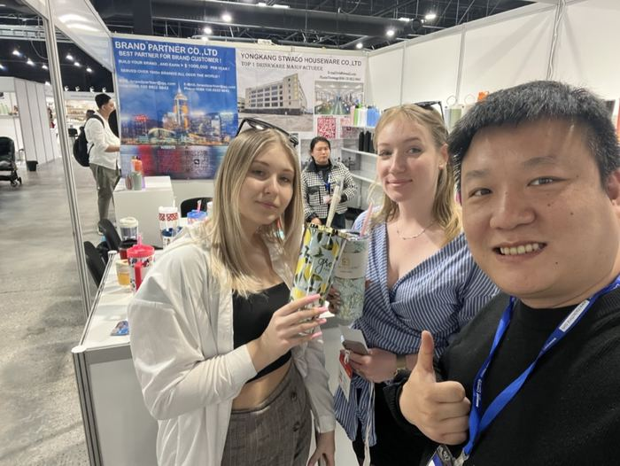
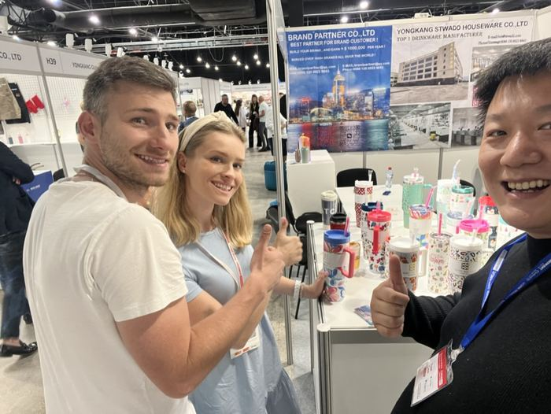
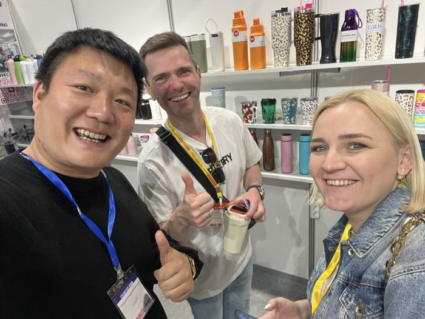
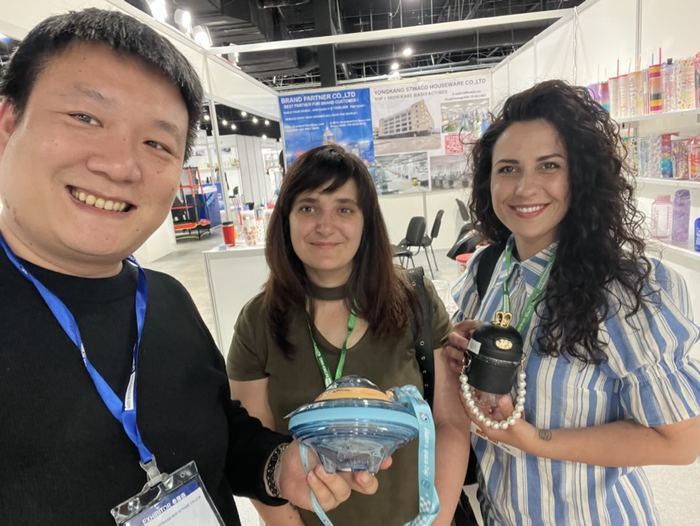
Not every buyer travels to a show — so we travel instead. When a supermarket group, importer or retail chain wants to evaluate a China drinkware supplier before committing to a container, we come to their office and their showroom: samples in the bag, price tiers and spec sheets on the table, packaging and barcode options settled on the spot. Two of those visits are below — a supermarket chain's buying team in Jakarta, and a buyer's own office and showroom in Dubai.
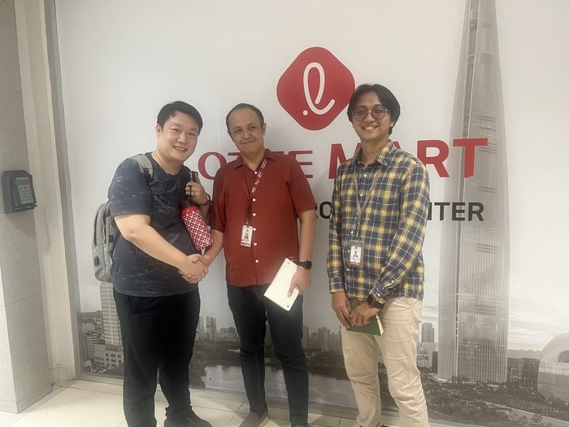
If you are a retail chain, supermarket group, importer or brand owner, we can visit your office the same way — in your country, with our own products on the table. Request an office visit →
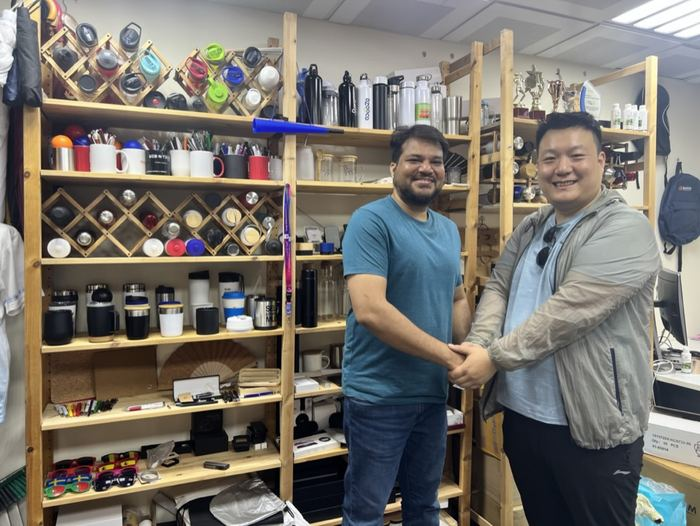
Importing drinkware or running a retail chain in your market? We can plan a visit on our next trip — or start with a video meeting. Request a buyer visit →
| Exhibitor | YONGKANG STWADD HOUSEWARE CO., LTD. — drinkware factory (OEM/ODM) since 2017 |
|---|---|
| Exhibitions attended | HOMELIFE Indonesia — 8th Indonesia HOMELIFE Expo, Jakarta International Expo (JIExpo), Jakarta, 27–30 November 2024 · Dubai, United Arab Emirates (Middle East) · Warsaw, Poland (Europe) — international trade shows |
| Buyer meetings | At our own booth and at customers' own offices and showrooms — e.g. Jakarta, Indonesia (LOTTE Mart Indonesia, December 2024) and Dubai, UAE: samples, price tiers and packaging reviewed face to face |
| Products displayed | Insulated water bottles · stainless steel tumblers · travel mugs · vacuum flasks · tea-infuser bottles · gift sets |
| Buyers met | Brand owners, importers, wholesalers and retail & distribution chains from the Middle East, South Asia, Africa, South-East Asia and Europe |
| Customisation shown | Custom logo, powder-coating & gradient finishes, retail-ready colour boxes, gift-set assembly |
| Factory location | No. 138-1, Shifang East Road, Industrial Function Zone (Huku), Yongkang City, Zhejiang, China |
| Certs | ISO 9001 · SGS · TUV · FDA · LFGB · BSCI |
| Get in touch | bob@stwadd.com · +86 150 8822 8843 · WhatsApp available |
Our booth is a compact version of our factory floor — the same ranges, the same finishes, the same customisation options our production lines run every week.
Tell us which exhibition you will attend and what you want to see — we will arrange booth times, samples and a factory visit if you travel on to China. Not going to a show this season? We also arrange buyer meetings at your office or ours, in person or by video.
Arrange a Booth Meeting